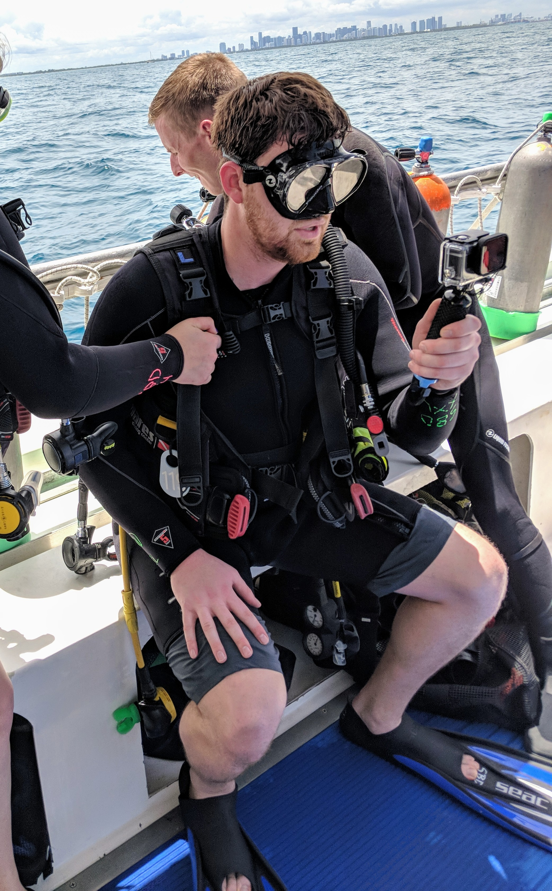

My name is Jacob Lehoux and I have just become a full stack web developer. I am from Portsmouth, New Hampshire and I went to the University of New Hampshire. When I have free time I like to spend it white water rafting, hiking or scuba diving. I also enjoy hanging with my family and friends and enjoying a nice day on a boat or at the beach.
Feel free to look at my portfolio and email me with any questions or comments. I am most interested in serverless architecture, AWS offerings, and JavaScript frameworks.
I recently completed the UNH Coding Bootcamp, a six month course designed to get you started in full stack development. My skills include: JavaScript, Vue.js, React.js, Quick Base, Bootstrap, AWS. I am always interested in learning new technologies and meeting new people.